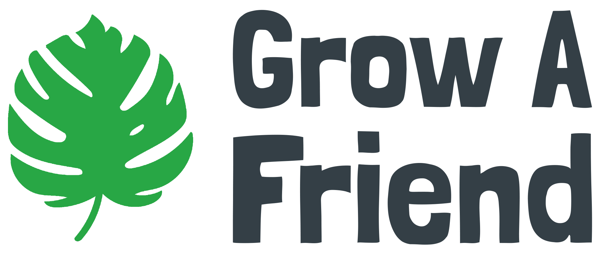

Grow A Friend
- 
- Semester Taken
Before College and Ongoing - Course
Independent Project - Project Description
About the non-profit:- started when the COVID-19 pandemic began and classes were cancelled
- a non-profit organization that aims to help create a space for the community to promote mental wellness with plants
- goal is to encourage everyone to grow their own little friend at home as it helps instill a sense of joy, patience, responsibility, purpose, and reverence for all aspects of life
Steps taken to reach goal:- started a company, specifically non-profit organization, and registered with state & federal govt
- worked to market and fundraise to reach more people and garner more support
- fulfilled orders with plant kit and personal messages to each individual
- worked in a team to continue fulfilling orders, improve website/system, and reach out to others for sponsorship
Support and Audience in Numbers:- over 250 plant kits and notes delivered to students and individuals
- 6 states reached
- over 1000 unique website users
- Technical Goals
The goals of my project include:
- create a website that supports light to medium traffic
- accept orders online through an order form
- register with all necessary authorities as a non-profit
- implement marketing strategies through social medias such as instagram
- recieve feedback from mentors and community members for support and feeback
- Final Product & Documentation
The final project for this project is the website: growafriend.org
An additional final product would consist of the plant kit that can be ordered from the website. The plant kit is seeing constant improvement as we recieve additional funding and feedback from the community.
Finally, most documentation for this project can be found on github. Although, this is an altered version to exclude confidental information and maintain order security.

- Looking Ahead
At the end of a project I like to look back and reflect on how I can improve on things in the future.
The single biggest thing in making this concept a reality is knowledge. I have minimal knowledge of AI, HCI, prototyping, and creating an overall good user-experience.
To gain knowledge and skills in these areas, I believe I could benefit from class at Carnegie Mellon University, like:- Human-Machine Virtuosity
- Gadgets, Sensors, and Activity Recognition in HCI
- Rapid Prototyping Technologies
- Other CS courses in AI/ML